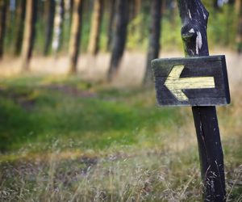

Backcountry Camping Basics
If you’re looking for the ultimate peace-and-quiet getaway, you might want to take your family on a completely crowd-less weekend. Backcountry camping exposes everyone to sights and experiences that most will never see. Often located in a wilderness area, a backcountry trail camp is a primitive campsite located near a trail and used for overnight camping.
Be prepared: There won’t be picnic tables, trash cans, or fire rings. Check before you go to find out if fires are allowed. This will often depend on weather conditions and how dry the area has become since the last rainfall. You may find that only backpacking camp stoves are allowed, so stock up on extra supplies including camp stove fuel and starters.
Some backcountry camp locations offer limited sources of potable water. You may need to carry in water or find water nearby in creeks or lakes. If so, remember to pack a water filter or iodine tablets and use them before consumption. You should plan to pack up and haul out all of your trash from your trail camp.
Remote areas are natural animal habitats. Most animals are very reclusive so consider yourself lucky if you spot any wildlife. You will need to bring a bear-proof container or rope to tie your food in a tree. Remember that small animals like raccoons and squirrels could find a way to get into your tent. Check ahead to see if dogs are permitted on the trails or where you will be camping.
Your camping space might be open or limited to designated trail camps. As tempting as it is to explore the pristine areas and make them your own, forest and animal habitats are sensitive to impact and should be left untouched. Remember, if you remain on the trails, you decrease your chances of tick bites and contacting poison oak.
Some families plan several nights of rustic backcountry camping, then on the last night, splurge on a hotel with clean sheets, hot showers, and a swimming pool, to provide one final day of relaxation.
Related Articles
Resources
Other Articles
Related Categories